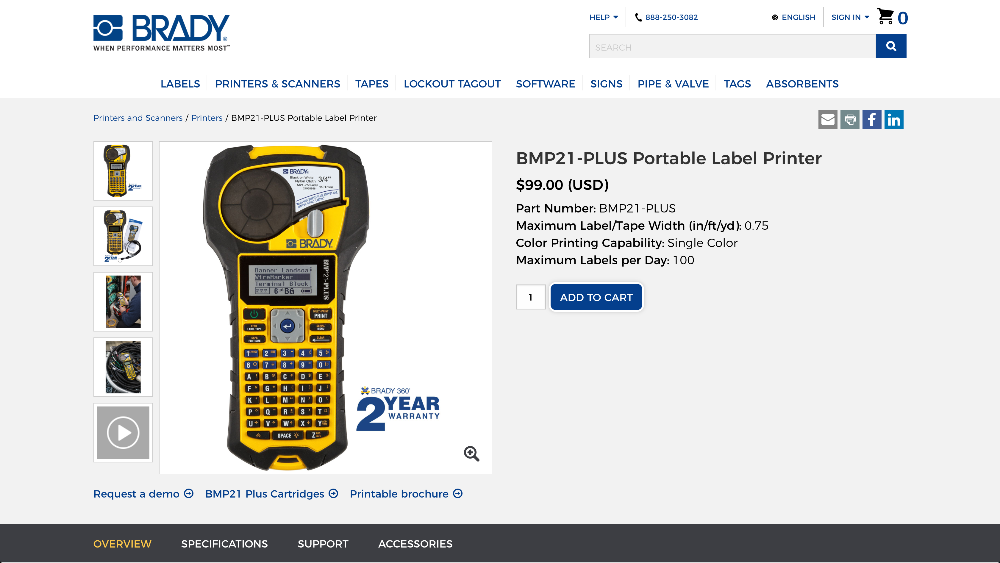
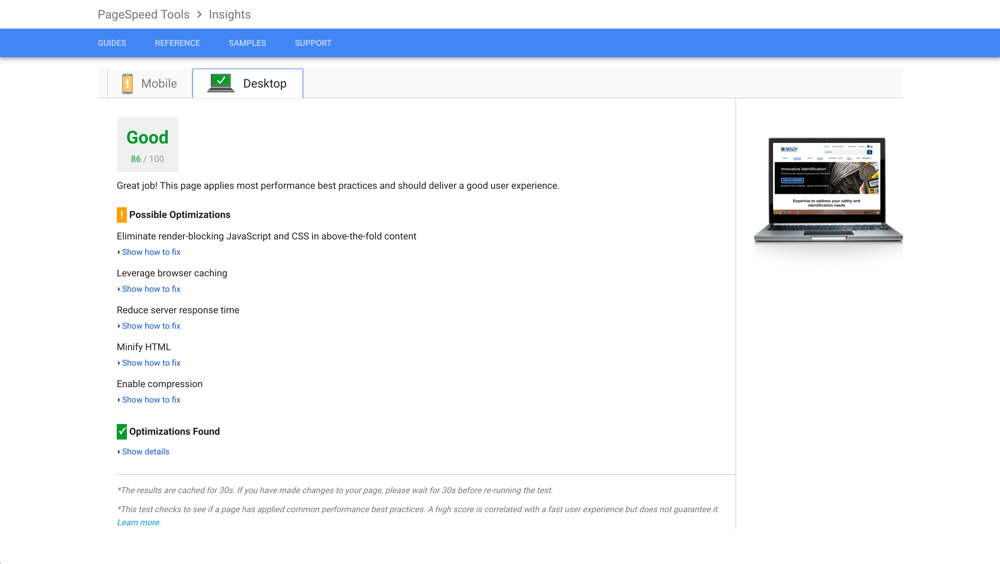
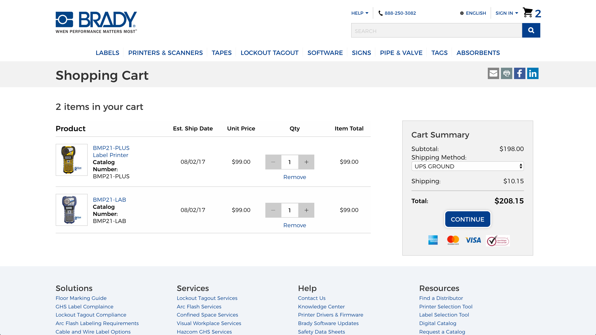
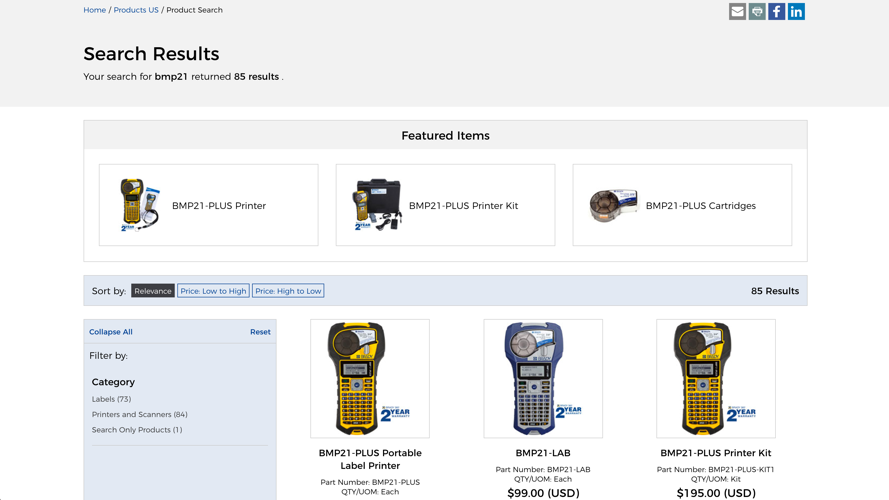
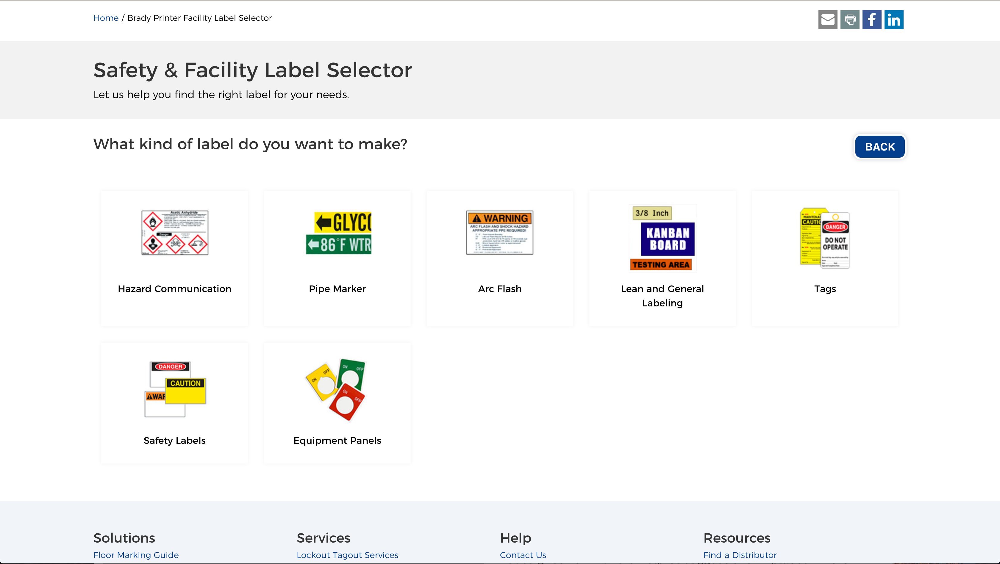

Services
What is a "User Experience Developer?"
As a User Experience Developer, I combine the user-centric process and mindset of a User Experience Designer with the technical skills to create presentational code. I help to bridge the gap between the intention of design, execution of code, and business objectives.
In short, I can help you to: Design. Develop. Gather Feedback. Get Results.
That means that I specialize in...
UI Development
- HTML
- CSS/Sass
- Presentational JS
- Build Systems
- Performance Optimization
UX Design
- Collaborative Design Facilitation
- Wireframes
- Interactive Prototypes
- Usability Testing
- Expert Heuristic Evaluations
UI Design
- Sketch
- Whiteboarding
- Establish Design Patterns
Work

Product Page
Brady's product page showcases product features and benefits. It provides both high-level and technical information to serve a variety of audiences.
Role: UX Design, UI Development

Performance Optimization
Industry-standard tools and practices were used to improve website page speed performance score by over 75 points.
(Photo via Google PageSpeed Insights)
Role: UI Development

Cart and Checkout
Brady's cart and checkout facilitate a smooth purchase process.
Role: UX Design, UI Development

Search
Brady's search page shows product results. Several pages also feature a set of product recommendations to help users narrow their search.
Role: UI Development

Safety Label Finder
Due to the technical nature of Brady's products, it can be tough to figure out which label to buy. The safety label finder translates technical specifications into terms that users can understand.
Role: UX Design, UI Design, UI Development
Process
A project typically begins with a deep analysis of the challenge that the team is trying to solve. From there, they can begin sketching on a whiteboard and/or in a collaborative design session. Next, ideas are transferred into more high-fidelity interactive mockups/designs for testing and finally built into front-end code.
All the while, feedback is gathered from users, stakeholders, and team members to refine the design in a way that solves our users' challenge.
About
As a small-town kid from humble beginnings, perched in front of my hearty, dial-up desktop, little did I know that one day I'd be creating those experiences from the opposite side of the screen.
When I look around at the places that make me feel at home, the 1860s farmhouse where I grew up and my most recent heart-of-the-city home, I see these opposite places tied together with solid foundations. I like to think I carry a little bit of Midwestern ethos in building solid website foundations that lend to simple interfaces.
I've got roots in marketing, anthropology, research, and human connection. I enjoy bringing positive digital experiences to life.
(I also love a good CSS pun.)